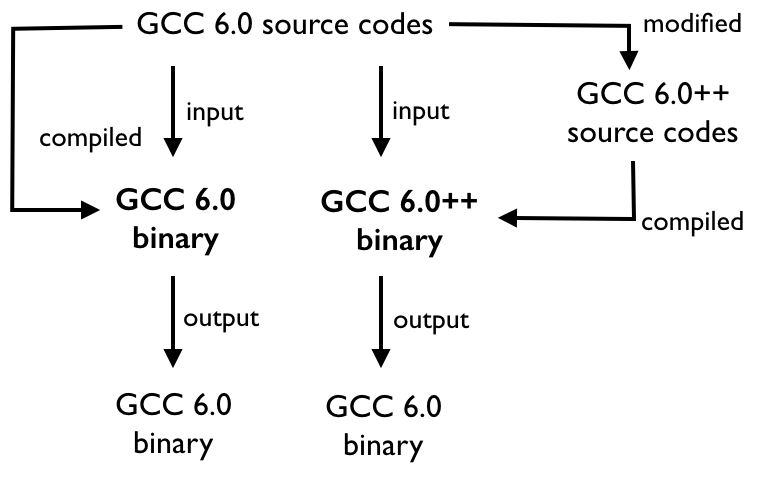

Compiler Optimizations
Qiong Cai (last update on Feb 28, 2016)
This page describes different compiler optimization techniques to improve instruction-level parallelism (ILP), data-level parallelism (DLP), task-level parallelism (TLP) and memory-level parallelism (MLP)
Performance Evaluation
Compiler Evaluation Framework.We use the compiler itself to evaluate the effectivness of compiler optimizations.